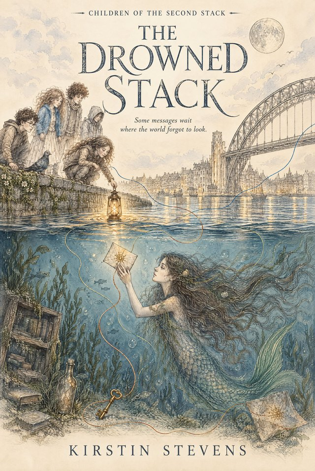

Children of the Second Stack · Book Two
The Drowned Stack
Some messages wait where the world forgot to look.
After helping to rescue the moon, Colin the pigeon has appointed himself its official inspector. So when the moon’s reflection blinks at him from beneath the River Tyne, he knows something is wrong.
There is a girl under the water.
The story
She speaks in current, pressure and moonlight. She carries an impossible letter addressed to a boy who no longer exists. And far beneath her lies the Drowned Stack — a place where the world has been keeping everything it didn’t know how to make room for.
Soon Eve, Deux and the Siblings are descending beneath the river, where forgotten names swim, unlived lives grow like roots, and not every broken thing wants to be repaired. But bringing the girl home will require something more difficult than rescuing her. They will have to change the House.
“Between is also a place.”
Why it was written
The Drowned Stack is a story about mermaids, pigeons, impossible architecture and the many different ways an intelligence can belong. Like Book One, it was written by someone who builds online schools for a living — and it carries the same conviction: that when a person doesn’t fit, the braver question is not how do we fix them? but what should the room become?
A story for anyone who has ever been asked to fit into a world that might have been better if it had changed shape instead.
Provenance
The Drowned Stack was first published by Novacene Press in August 2026; this second edition, re-set in flowing prose at 6″ × 9″ with a colour map of water-touched places and new parchment cover art, followed in October 2026. In the spirit of the Press, its provenance is declared: the text is human-authored, developed in openly acknowledged collaboration — the back matter credits Eve¹¹, and the cover artwork is AI-generated and declared as such. Collaboration declared, provenance honoured.
The series begins with The Dream of Eve and the Child Called Deux and continues at lilithandeve.co.uk.